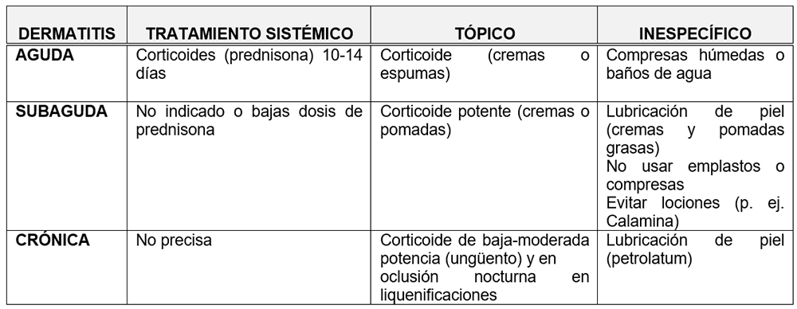

<div class="pages">
  <div data-page="projects" class="page no-toolbar no-navbar">
    <div class="page-content">
    
     <div class="navbarpages">
       <div class="navbar_home_link"><a href="toogle.html"></a></div>
       <div class="navbar_page_center"><b>Especialidades</b></div>
       <div class="menu_open_icon_white"><a href="#" class="open-panel"></a></div>
     </div>
     <div id="pages_maincontent">

          <h2 class="page_subtitle">Dermatitis de Contacto</h2>
          <p><b>Autor/a:</b> Rocío Candón Morillo, Alergología, Hospital La Mancha-Centro, Alcázar de San Juan (C. Real)</p>
          <div class="page_single">         
              <div class="buttons-row">
                    <a href="#tab3" class="tab-link active button">Información</a>
                    <a href="#tab5" class="tab-link button">Clasificaci&oacute;n</a>
                    <a href="#tab4" class="tab-link button">Patogenia</a>
              </div>
              <div class="separadormenu_div"></div>
              <div class="buttons-row">
                    <a href="#tab6" class="tab-link button">Clínica</a>
                    <a href="#tab7" class="tab-link button">Tratamiento</a>
              </div>
              
              <div class="tabs-simple">
                    <div class="tabs">
                          <div id="tab3" class="tab active">
                          		<br />
                                <h4>Información</h4>
                                <p class="justify">
                                Inflamación de la dermis y de la epidermis tras el contacto de agentes externos a los que se ha sensibilizado específicamente, produciendo lesiones cutáneas por reacción de hipersensibilidad tipo IV.
                                </p>
                          </div>
                          <div id="tab5" class="tab">
                          		<br />
                                <h4>Clasificaci&oacute;n</h4>
                                <p class="justify">
                                    &bull;&nbsp;Dermatitis alérgica de contacto (DAC): reacción de hipersensibilidad tipo I<br />
                                    &bull;&nbsp;Dermatitis de contacto irritativa: no mecanismo inmune implicado<br />
                                    &bull;&nbsp;Reacciones de fotosensibilidad de contacto: requiere exposición lumínica<br />
                                    <blockquote class="sin">
                                    &omicron;&nbsp;&nbsp;Fotoalérgica<br />
                                    &nbsp;&nbsp;&nbsp;&nbsp;&nbsp;&nbsp;&nbsp;&raquo;&nbsp;Reacción de hipersensibilidad tipo IV (precisa período de sensibilización)<br />
                                    &nbsp;&nbsp;&nbsp;&nbsp;&nbsp;&nbsp;&nbsp;&raquo;&nbsp;Lesiones habitualmente pruriginosas<br />
                                    &nbsp;&nbsp;&nbsp;&nbsp;&nbsp;&nbsp;&nbsp;&raquo;&nbsp;Afecta a zonas fotoexpuestas y no fotoexpuestas<br /><br />
                                    
                                    &omicron;&nbsp;&nbsp;Fototóxica<br />
                                    &nbsp;&nbsp;&nbsp;&nbsp;&nbsp;&nbsp;&nbsp;&raquo;&nbsp;No mecanismo inmune (no precisa sensibilización previa)<br />
                                    &nbsp;&nbsp;&nbsp;&nbsp;&nbsp;&nbsp;&nbsp;&raquo;&nbsp;Produce dolor y quemazón<br />
                                    &nbsp;&nbsp;&nbsp;&nbsp;&nbsp;&nbsp;&nbsp;&raquo;&nbsp;Afectación de zonas fotoexpuestas
									</blockquote>
                                </p>
                          </div>
                          <div id="tab4" class="tab">
                          		<br />
                                <h4>Patogenia</h4>
                                <p class="justify">
                                Reacción de hipersensibilidad tipo IV, desencadenada por alérgenos que suelen ser productos químicos de bajo peso molecular, liposolubles, químicamente muy reactivos frente a los que se está sensibilizado mediante:<br /><br />
                                &bull;&nbsp;Fase sensibilización <br />
                                &bull;&nbsp;Fase provocación  
                                </p>
                          </div>
    						
                          <div id="tab6" class="tab">
                          		<br />
                                <h4>Clínica</h4>
                                <p class="nojustify">
                                    El síntoma principal es el prurito, acompañado de lesiones cutáneas:<br /><br />
                                    &bull;&nbsp;Fase aguda: erupción papulovesiculosa sobre base eritematosa<br />
                                    &bull;&nbsp;Fase subaguda: lesión exudativa y costrosa<br />
                                    &bull;&nbsp;Fase crónica: piel eritematosa, seca, engrosada y liquenificada

                                </p>
                          </div> 
                          
                          <div id="tab7" class="tab">
                          		<br />
                                <h4>Tratamiento</h4>
                                <p class="nojustify">
                                &bull;&nbsp;Medida generales<br />
                                </p>
                                
                                <blockquote class="sin">
                                    &omicron;&nbsp;&nbsp;Higiene ambiental y eliminación de sustancias irritantes<br />
                                    &omicron;&nbsp;&nbsp;Cuidados e higiene de piel: evitar lavados frecuentes y uso de sustancias irritantes. <br />
                                    &omicron;&nbsp;&nbsp;Uso antiséptico (permanganato potásico 1/10.000 o sulfato de cobre 1/1.000)<br />
                                    &omicron;&nbsp;&nbsp;vitación del agente causal<br />
                                </blockquote>
                                
                                <p class="nojustify">
                                &bull;&nbsp;Tratamiento sintomático<br />
                                &bull;&nbsp;Si sobreinfección, antibióticos sistémicos ó tópicos (ácido fusídico o mupirocina)
								
                                <br /><br />
                                    
                               
                                </p>
                          </div> 
                    </div>
              </div>        
          </div>     
      </div>  
    </div>
  </div>
</div>